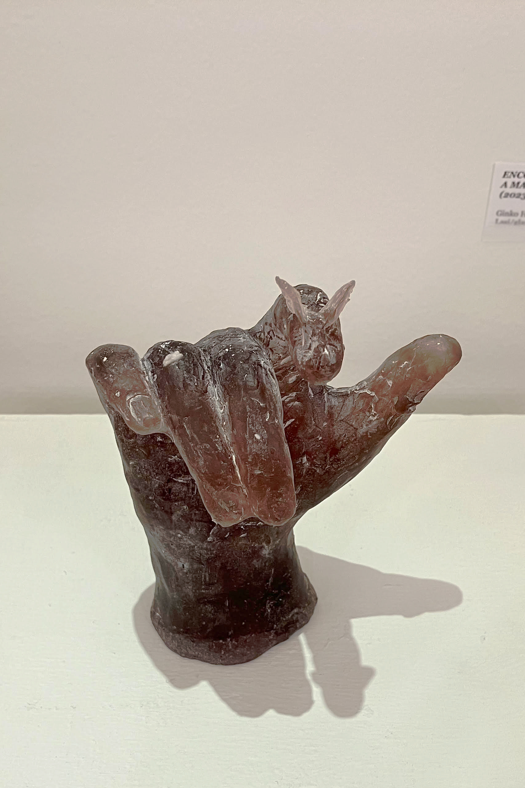
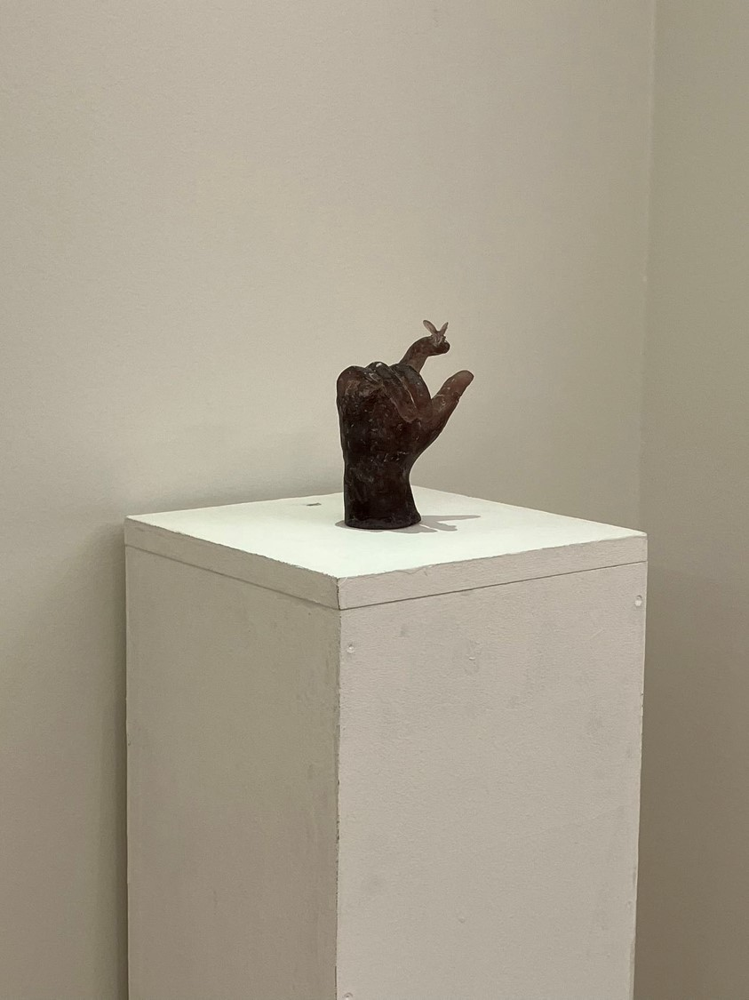
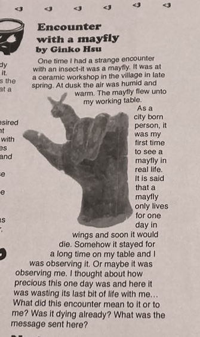

Encounter with a Mayfly

Once, I had a strange encounter with an insect—a mayfly. It was late spring, at a ceramics workshop in a village. At dusk, the air was humid and warm. The mayfly landed on my worktable.
Having grown up in a city, I had never seen a mayfly in real life. I had heard that a mayfly lives for only a day after growing its wings, and that it would soon die. Somehow, it stayed on my table for a long time. I was observing it. Or perhaps it was observing me.
I thought about how precious that one day was, and here it was, wasting the last bit of its life with me… What did this encounter mean to it, or to me? Was it already dying? What was the message sent here?


